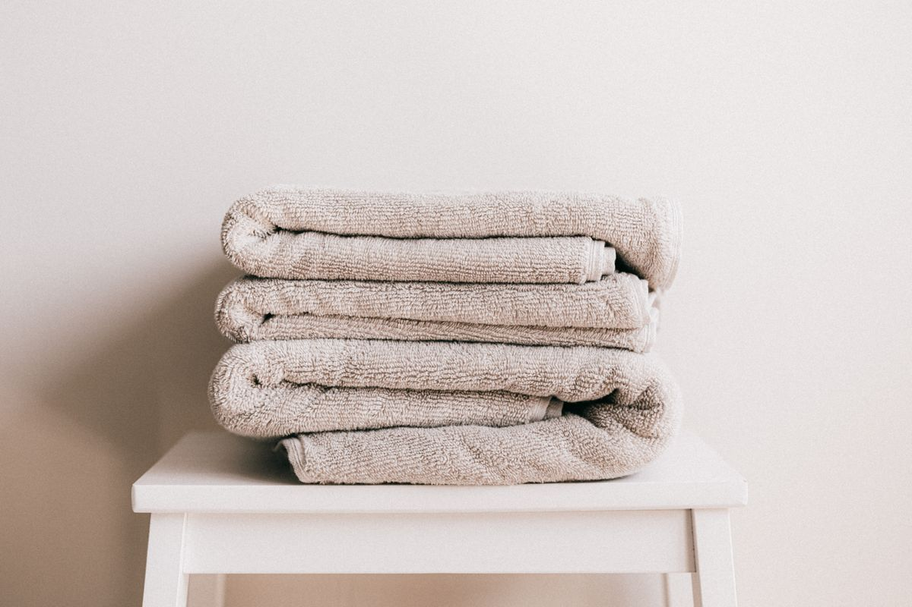

Her ilmekte bir sabır, her dokuda bir hikâye
LOOMÉ, adını dokuma tezgâhından — "loom"dan — alır. Ama bizim için tezgâh yalnızca bir araç değil; kuşaktan kuşağa aktarılan bir sabrın, bir zanaatın ve bir yaşam biçiminin adıdır.
Yolculuğumuz, Denizli Buldan'ın dar sokaklarındaki yüz yıllık bir atölyede başladı. Üç nesildir aynı ailenin işlettiği bu atölyede tezgâhlar hiç susmadı; iplikler hep aynı özenle gerildi, mekikler aynı ritimle işledi. Biz bu ritmi bozmadan, ona yalnızca bugünün zarafetini ekledik.
Her LOOMÉ parçası, GOTS sertifikalı organik pamuktan ve Avrupa'nın en iyi keten liflerinden, acele edilmeden dokunur. Kimyasal yumuşatıcılar yerine taş yıkama, sentetik boyalar yerine doğal pigmentler kullanırız. Çünkü teninize dokunan her şeyin, toprağa da saygılı olması gerektiğine inanırız.
Bugün LOOMÉ; banyodan yatak odasına, ev giyiminden sofraya uzanan koleksiyonuyla binden fazla eve konuk oldu. Ama her siparişte hâlâ aynı heyecanı duyuyoruz: Bir tezgâhın başında başlayan hikâyenin, sizin evinizde devam edecek olmasının heyecanını.
“Aceleyle dokunan hiçbir şey kalıcı olmaz. Biz eve girecek her parçayı, bir ömür eşlik etsin diye dokuyoruz.”LOOMÉ Kurucu Atölyesi — Buldan, Denizli

Doğaya ve zanaata saygı
Koleksiyonlarımızın her adımında üç ilkeye bağlı kalırız: doğal lif, dürüst üretim ve kalıcı kalite. Trendlere değil, zamana dokuruz.
Plastiksiz paketleme, geri dönüştürülebilir kutular ve karbon dengeli kargo ile; evinize ulaşan zarafetin doğaya yük olmamasını sağlarız.